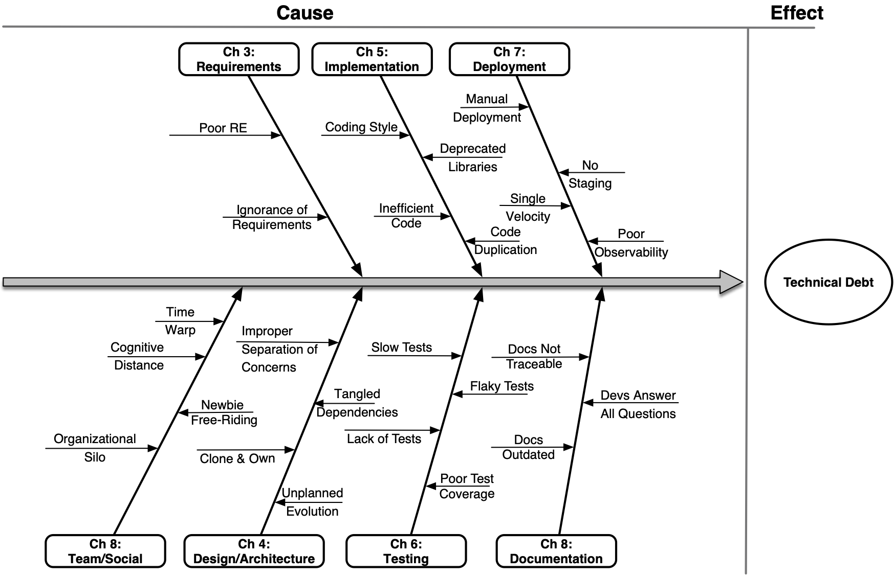

While this book goes into the technical details of Technical Debt, we made it accessible to a large audience.
Avoid technical debt in the design and implementation of your system at multiple stages of the softare licecycle.
Learn how your team dynamics creates Technical Debt, how to detect it and plan for its reduction in your roadmap.
Discover what is Technical Debt and learn how you can avoid it through your career, either as a developer or manager.
This book is essential for any programmers or managers that want to design software that will last for years.
Tech lead at Twitter, AWS, researchers at Carnegie-Mellon Software Engineering Institute: the authors lived the pain of Technical Debt.
Every aspect of the book is illustrated with a real-world example.
Like financial debt, Technical Debt is often a necessity, and only bad when used in excess. Learn how to detect your technical debt and have an actional plan to reduce it over time.
Technical Debt impacts various aspects of the software development process. Our goal is to dedicated one chapter for each major aspect it impacts.
Learn what is technical debt, the well-known metaphor and the book structure.
Go beyond the metaphor. Technical Debt is often necessary but must not be used in excess. This chapter explains why Technical Debt can be good and what you should do about it.
We begin by explaining how shortcuts in understanding product requirements leads to requirements debt. We seed the idea that successful software is about moving from requirements to released feature, quickly.
Well-written book is concerned with creating typography and is essential for professionals who regularly
How your technical decisions on software implementation creates technical debt. What language patterns to look for, why they create Technical Debt and how to avoid them.
How testing (or the lack of) introduces Technical Debt. What should you be testing in your application, what are the acceptable levels of testing and how to enforce it and reduce Technical Debt.
The rise of the devops culture and the move to the cloud created new tools that simplify application deployment. Using bad deployment and operations practices slows you down and could severely impact your business.
Identifying and managing Technical Debt requires careful, yet efficient, documentation. We explain how to find shortcomings in documentation and how to implement cost-effective practices to prevent these problems.
Well-written book is concerned with creating typography and is essential for professionals who regularly
Well-written book is concerned with creating typography and is essential for professionals who regularly
Tecnical Debt is an effective metapor for communicating the importance of software maintenance to business stakeholders. We outline some simple approaches for getting management buy-in for the problem of Tecnical Debt.
Summarizes the outcomes of the book with a set of tangible takeaways.
We draw on several real-world software systems and explain how those systems dealt with Technical Debt.
The Atacama Large Millimetre/Submillimetre Array (ALMA) is a set of 66 radio dishes in the high Chilean desert, run by the ALMA science foundation (an international partnership of national science foundations). As with most large, billion dollar science projects, planning for the telescope began decades before science operations started in 2013. We outline the technical debt challenges ALMA faced in design, construction, and now operations.
Brightsquid is a software company based in Calgary, Canada, that makes secure communications solutions for the healthcare industry. The company has been in business for more than a decade and has been developing and evolving their core Platform continuously over that time. Like most long-lived software, their Platform has accumulated considerable technical debt. Brightsquid’s developers felt this, but they had no way of identifying this debt, measuring its impact, and determining if it would be worth refactoring.
Twitter is a world-leading social networking platform. We describe some of the scaling challenges Twitter faced in its early incarnation. In particular, through this case-study, we discuss how the company handled its growth when the underlying software architecture was not designed to handled the increase of load. We discuss how Technical Debt hit the company in its early days, from the use of a custom stack (custom form of the Ruby runtime or Ruby on Rails framework), relying on relational databases and the pain of scaling a monolithic application.
This case-study is about a safety-critical system, which is one used on military, avionics or nuclear systems and where life or millions of dollars can be at stake. The particular software we are considering was written in C and performs critical operations for a satellite-based positioning system. Failure of this software might impact boats, planes or trucks (failure to get location and directions, blocking hundreds of vehicles).
We interviewed software engineers that experienced technical debt and connected their experience throughout the book.
Marco Bartolini is the lead software architect at the Square Kilometre Array, working to build the world's largest radio telescope. Marco explains some of the challenges building a long-lived, highly complex set of scientific software systems, and managing the process to avoid inadvertent technical debt.
Julien Danjou is the founder of mergify, a well-known Python developer and the author of the books Serious Python and The Hacker's Guide to Scaling Python. He shares his stories on technical debt, how he found it and reduced it.
Nicolas Devillard is a software engineer working specifically on low-level and embedded systems. Through his interview, Nicolas details how technical debt impacted his work through the years, especially for systems that need to be maintained for years. He also explains how technical debt brings challenge to maintain different version of the same product and take the example of an encryption library he worked on for years.
Kevin Lingerfelt is a software developer working at Buoyant. Kevin was previously a software engineer at Twitter, where he experienced all the pain related to scaling the architecture of the website and switching from a monolithic application to a multi-services approach. His experience of technical debt is detailed in a separate study on Twitter that details what challenges the company faced and how it overcame them.
Well-written book is concerned with creating typography and is essential for professionals who regularly
Well-written book is concerned with creating typography and is essential for professionals who regularly
This book is focused on learning by experience and illustrates each chapter with actionable insights you can use every day.
Technical Debt is a necessary evil. Learn to measure and evaluate Technical Debt to know when it's too much and time to pay it back.
Numerous code snippets explain how to identify and avoid Technical Debt.
Detect communication patterns and team structure and interaction that incurr Technical Debt.
Use automated tools to measure design debt and calculate mitigation strategy ROI.
Understand the extensive social debt "smells" that can disrupt even the best-planned tech stack.
Learn concrete strategies to talk the language that will convince business professionals about the need to deal with software challenges.